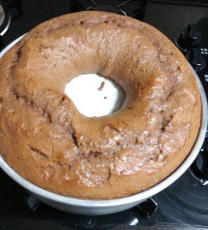

Bolo Integral de Banana com Maçã e Canela

Outra opção saudável: bolo de banana com pedacinhos de maçã e canela !
Ingredientes:
- 3 bananas maduras;
- 3 ovos;
- 1/2 xícara (chá) de óleo;
- 1 xícara (chá) de açúcar mascavo;
- 1 colher (sobremesa) de canela em pó;
- 1 copo de iogurte integral, pode ser com sabor de mel;
- 1 xícara (chá) de farinha de trigo integral;
- 1 xícara (chá) de farinha de trigo branca;
- 1/2 xícara de açúcar refinado;
- 1 maçã fuji pequena picadinha em cubos;
- 1 colher (sopa) de fermento em pó (usar no final)
Modo de Preparo:
- Em um liquidificador, bata bastante os 6 primeiros ingredientes: bananas, ovos, óleo, açúcar mascavo, canela e iogurte;
- Despeje o conteúdo em uma tigela;
- Agora, usando um fouet ou uma batedeira, adicione as farinhas de trigo e o açúcar aos poucos, colher por colher, e ir batendo;
- Bata até ficar uma massa fofa e leve!
- Adicione 1 colher de sopa de fermento em pó e misturar com a maçã picadinha em cubos bem pequenos, mexendo delicadamente;
- Unte com manteiga e farinha uma forma de bolo (de preferência com buraco no meio);
- Leve para assar em forno pré-aquecido a 180C, por 40 minutos.